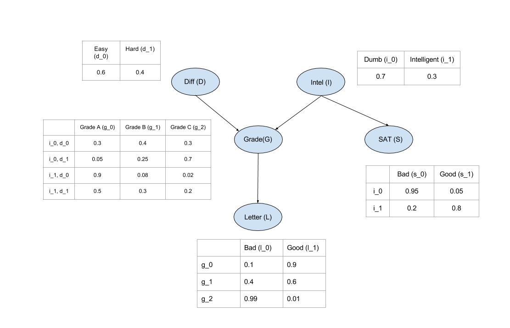
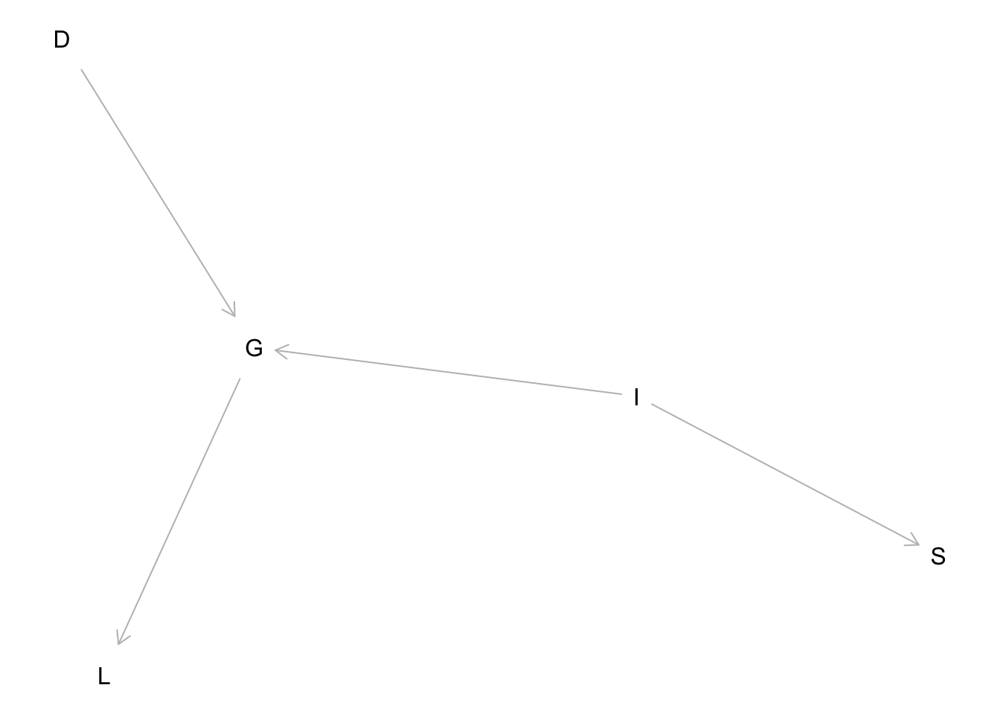

library(tidyverse)
library(dagitty)
library(bnlearn)
library(gRain)Bayesian networks
Bayesian networks
This notebook demonstrates Bayesian networks using the bnlearn and gRain packages in R, converting the examples from the original pgmpy Python notebook: https://github.com/pgmpy/pgmpy_notebook/blob/master/notebooks/2.%20Bayesian%20Networks.ipynb.
Setup environment
What is a Bayesian network?
A Bayesian network is a probabilistic graphical model (a type of statistical model) that represents a set of random variables and their conditional dependencies via a directed acyclic graph (DAG). Bayesian networks are mostly used when we want to represent causal relationship between the random variables. Bayesian networks are parameterized using conditional probability distributions (CPD). Each node in the network is parameterized using \(P(\rm{node} \mid \rm{parents}(\rm{node}))\) where \(\rm{parents}(\rm{node})\) represents the parents of the node in the network.
We can take the example of the student model:

In bnlearn (as in pgmpy) we define the network structure and the CPDs separately and then associate them with the structure. Here’s an example for defining the above model:
dag <- model2network("[D][I][G|D:I][S|I][L|G]")
graphviz.plot(dag)Loading required namespace: Rgraphvizor, using dagitty:
g <- dagitty("dag {
D -> G
I -> G
I -> S
G -> L
}")
dag <- model2network(convert(g, to = "bnlearn"))
plot(g)Plot coordinates for graph not supplied! Generating coordinates, see ?coordinates for how to set your own.
CPD for Difficulty (D):
cptD_wide <-
tribble(
~d_0, ~d_1,
0.6, 0.4
)
cptD_long <- cptD_wide %>%
pivot_longer(
cols = starts_with("d_"),
names_to = "D",
values_to = "prob")
cptD <- xtabs(prob ~ D, data = cptD_long)
cptD_wide| d_0 | d_1 |
|---|---|
| 0.6 | 0.4 |
CPD for Intelligence (I):
cptI_wide <-
tribble(
~i_0, ~i_1,
0.7, 0.3
)
cptI_long <- cptI_wide %>%
pivot_longer(
cols = starts_with("i_"),
names_to = "I",
values_to = "prob")
cptI <- xtabs(prob ~ I, data = cptI_long)
cptI_wide| i_0 | i_1 |
|---|---|
| 0.7 | 0.3 |
CPD for Grade (G):
cptG_wide <-
tribble(
~I, ~D, ~g_0, ~g_1, ~g_2,
"i_0", "d_0", 0.30, 0.40, 0.30,
"i_0", "d_1", 0.05, 0.25, 0.70,
"i_1", "d_0", 0.90, 0.08, 0.02,
"i_1", "d_1", 0.50, 0.30, 0.20
)
cptG_long <- cptG_wide %>%
pivot_longer(
cols = starts_with("g_"),
names_to = "G",
values_to = "prob")
cptG <- xtabs(prob ~ G + I + D, data = cptG_long)
cptG_wide| I | D | g_0 | g_1 | g_2 |
|---|---|---|---|---|
| i_0 | d_0 | 0.30 | 0.40 | 0.30 |
| i_0 | d_1 | 0.05 | 0.25 | 0.70 |
| i_1 | d_0 | 0.90 | 0.08 | 0.02 |
| i_1 | d_1 | 0.50 | 0.30 | 0.20 |
CPD for SAT (S):
cptS_wide <- tribble(
~I, ~s_0, ~s_1,
"i_0", 0.95, 0.05,
"i_1", 0.20, 0.80
)
cptS_long <- cptS_wide %>%
pivot_longer(
cols = starts_with("s_"),
names_to = "S",
values_to = "prob"
)
cptS <- xtabs(prob ~ S + I, data = cptS_long)
cptS_wide| I | s_0 | s_1 |
|---|---|---|
| i_0 | 0.95 | 0.05 |
| i_1 | 0.20 | 0.80 |
CPD for Letter (L):
cptL_wide <- tribble(
~G, ~l_0, ~l_1,
"g_0", 0.10, 0.90,
"g_1", 0.40, 0.60,
"g_2", 0.99, 0.01
)
cptL_long <- cptL_wide %>%
pivot_longer(
cols = starts_with("l_"),
names_to = "L",
values_to = "prob")
cptL <- xtabs(prob ~ L + G, data = cptL_long)
cptL_wide| G | l_0 | l_1 |
|---|---|---|
| g_0 | 0.10 | 0.90 |
| g_1 | 0.40 | 0.60 |
| g_2 | 0.99 | 0.01 |
Fit the network:
bn_fit <- custom.fit(dag, dist = list(
D = cptD,
I = cptI,
G = cptG,
S = cptS,
L = cptL
))
graphviz.chart(bn_fit)Independencies in a Bayesian network
Independencies implied by the structure of a Bayesian Network can be categorized in 2 types:
Local Independencies: Any variable in the network is independent of its non-descendents given its parents. Mathematically it can be written as:
\[ X\ \bot\ \rm{nondesc}(X) \mid \rm{parents}(X) \]
Global Independencies: For discussing global independencies in Bayesian Networks we need to look at the various network structures possible. Starting with the case of 2 nodes, there are only 2 possible ways for it to be connected:
In the above two cases it is fairly obvious that change in any of the node will affect the other. For the first case we can take the example of \(D \rightarrow G\). If the course is hard the probability of getting a higher grade decreases. For the second case we can take the example of \(S \leftarrow I\). The probability of getting a good SAT score increases if the student is intelligent.
Now, there are four possible ways of connection between 3 nodes:
Now in the above cases we will see the flow of influence from A to C under various cases.
Causal: In the general case when we make any changes in the variable A, it will have effect of variable B (as we discussed above) and this change in B will change the values in C. One other possible case can be when B is observed i.e. we know the value of B. So, in this case any change in A won’t affect B since we already know the value. And hence there won’t be any change in C as it depends only on B. Mathematically we can say that: (A⊥C|B).
Evidential: Similarly in this case also observing B renders C independent of A. Otherwise when B is not observed the influence flows from A to C. Hence (A⊥C|B).
Common Evidence: This case is a bit different from the others. When B is not observed any change in A reflects some change in B but not in C. Let’s take the example of D→G←I. In this case if we increase the difficulty of the course the probability of getting a higher grade reduces but this has no effect on the intelligence of the student. But when B is observed let’s say that the student got a good grade. Now if we increase the difficulty of the course this will increase the probability of the student to be intelligent since we already know that he got a good grade. Hence in this case (A⊥C) and (A⊥̸C|B). This structure is also commonly known as V structure.
Common Cause: The influence flows from A to C when B is not observed. But when B is observed and change in A doesn’t affect C since it’s only dependent on B. Hence here also (A⊥C|B).
Let’s now see a few examples for finding the independencies in a Bayesian newtork using bnlearn and/or dagitty:
# all local independencies in the DAG
impliedConditionalIndependencies(g, type = "basis.set")D _||_ I, S
G _||_ S | D, I
I _||_ D
L _||_ D, I, S | G
S _||_ D, G, L | I# all paths in the DAG that include D
paths(g, "D", setdiff(names(g), "D")) %>% as_tibble()| paths | open |
|---|---|
| D -> G | TRUE |
| D -> G <- I | TRUE |
| D -> G -> L | TRUE |
| D -> G <- I -> S | TRUE |
How is this Bayesian network representing the joint distribution over the variables?
Till now we just have been considering that the Bayesian Network can represent the Joint Distribution without any proof. Now let’s see how to compute the Joint Distribution from the Bayesian Network.
From the chain rule of probabiliy we know that:
\(P(A,B) = P(A \mid B) \cdot P(B) = P(A \mid B) \cdot P(B)\)
Now in this case:
\(P(D,I,G,L,S)=P(L \mid S,G,D,I) \cdot P(S \mid G,D,I) \cdot P(G \mid D,I) \cdot P(D \mid I) \cdot P(I)\)
Applying the local independence conditions in the above equation we will get:
\(P(D,I,G,L,S) = P(L \mid G) \cdot P(S \mid I) \cdot P(G \mid D,I) \cdot P(D) \cdot P(I)\)
From the above equation we can clearly see that the Joint Distribution over all the variables is just the product of all the CPDs in the network. Hence encoding the independencies in the Joint Distribution in a graph structure helped us in reducing the number of parameters that we need to store.
Inference using a Bayesian network
Compile the fitted model and perform queries:
gr <- as.grain(bn_fit)
# Marginal distribution of G
querygrain(gr, nodes = "G")$G
G
g_0 g_1 g_2
0.3620 0.2884 0.3496 # Conditional P(G | D = Easy, I = Intelligent)
gr_evi <- setEvidence(gr, evidence = list(D = "Easy", I = "Intelligent"))
querygrain(gr_evi, nodes = "G")$G
G
g_0 g_1 g_2
0.3620 0.2884 0.3496 Extract the most probable grade:
# Without evidence
margG <- querygrain(gr, nodes = "G")
mapG <- names(which.max(margG$G))
# With evidence D and I
margG_evi <- querygrain(gr_evi, nodes = "G")
mapG_evi <- names(which.max(margG_evi$G))
list(mapG = mapG, mapG_evi = mapG_evi)$mapG
[1] "g_0"
$mapG_evi
[1] "g_0"Other methods for inference using a Bayesian network
For larger or continuous models, consider approximate algorithms (belief propagation, sampling) via gRain or structure/parameter learning via bnlearn::boot.strength, bnlearn::hc, etc.
library(nimble)nimble version 1.3.0 is loaded.
For more information on NIMBLE and a User Manual,
please visit https://R-nimble.org.
Note for advanced users who have written their own MCMC samplers:
As of version 0.13.0, NIMBLE's protocol for handling posterior
predictive nodes has changed in a way that could affect user-defined
samplers in some situations. Please see Section 15.5.1 of the User Manual.
Attaching package: 'nimble'The following object is masked from 'package:stats':
simulateThe following object is masked from 'package:base':
declare# Define the Bayesian model
code <- nimbleCode({
D ~ dbern(0.05) # Prior: P(D = 1) = 0.05
Tprob[1] <- 0.1 # P(T = 1 | D = 0)
Tprob[2] <- 0.8 # P(T = 1 | D = 1)
T ~ dbern(Tprob[D + 1]) # Likelihood: P(T | D)
})
# Now we observe T = 1 (positive test)
constants <- list()
data <- list(T = 1)
inits <- list(D = 0)
# Build and compile the model
model <- nimbleModel(code, constants = constants, data = data, inits = inits)Defining modelBuilding modelSetting data and initial valuesRunning calculate on model
[Note] Any error reports that follow may simply reflect missing values in model variables.Checking model sizes and dimensionsCmodel <- compileNimble(model)Compiling
[Note] This may take a minute.
[Note] Use 'showCompilerOutput = TRUE' to see C++ compilation details.# Configure MCMC to monitor D
conf <- configureMCMC(model, monitors = "D")===== Monitors =====
thin = 1: D
===== Samplers =====
binary sampler (1)
- Dmcmc <- buildMCMC(conf)
Cmcmc <- compileNimble(mcmc, project = model)Compiling
[Note] This may take a minute.
[Note] Use 'showCompilerOutput = TRUE' to see C++ compilation details.# Run MCMC
samples <- runMCMC(Cmcmc, niter = 10000)running chain 1...|-------------|-------------|-------------|-------------|
|-------------------------------------------------------|# Estimate P(D = 1 | T = 1)
posterior_prob_D1 <- mean(samples[, "D"])
posterior_prob_D1[1] 0.287library(gRain)
# 1. Define CPTs
cpt_D <- cptable(~ D, values = c(0.95, 0.05), levels = c("healthy", "diseased"))
cpt_T_given_D <- cptable(~ T | D, values = c(0.9, 0.1, 0.2, 0.8), levels = c("negative", "positive"))
# 2. Compile CPTs into a grain object
plist <- compileCPT(list(cpt_D, cpt_T_given_D))
bn <- grain(plist)
# 3. Set evidence: T = positive
bn_evid <- setEvidence(bn, evidence = list(T = "positive"))
# 4. Sample from P(D | T = 1)
set.seed(123)
samples <- simulate.grain(bn_evid, n = 100000)
# 5. Estimate posterior
mean(samples$D == "diseased") # ~0.296[1] 0.2985